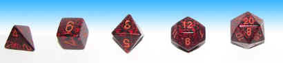
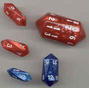
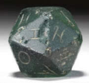
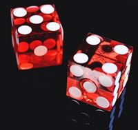

Fair Dice
A die (plural "dice") is really any solid object with markings on each face that can be used to create a random number. Very useful when playing games of chance!
Fair Dice
In mathematics we say "fair dice" when we mean that there is an equally likely chance of landing on any face.

Most people think of these little cubes
when we say "dice" ...
... but all of the Platonic Solids can make fair dice!

Because the faces are all the same, there is an equal chance of landing on any face.
So, using the platonic solids we can have dice with 4, 6, 8, 12 or 20 faces!
But with some imagination we can actually make fair dice with any number of faces we want.

How about these interesting dice?

Or this 10-sided one.

Or this 20-sided Roman die that is 1,800 years old.
So long as there is an equally likely chance of landing on any face then they are Fair Dice.
Professional Dice

For very fair dice there are casino-grade dice with special qualities:
- partly transparent so you can see any bubbles or weights inside
- as close as possible to exact cubes
- sharp edges and corners
- dots filled in, so the weight is the same on each side